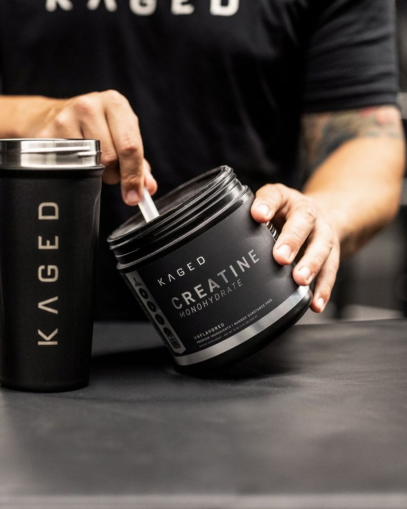
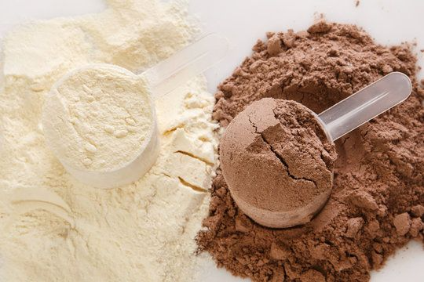
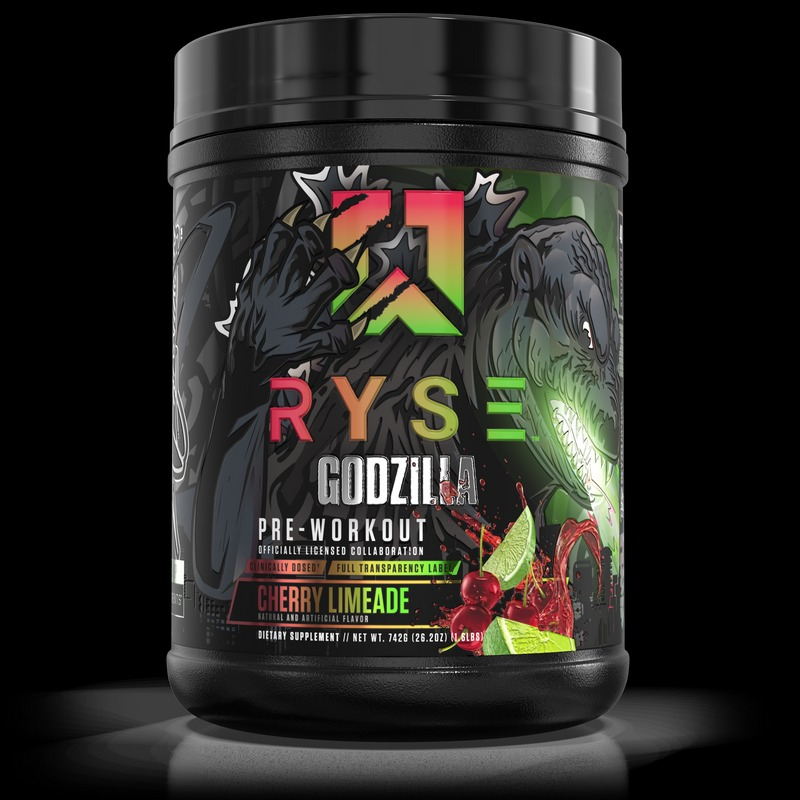
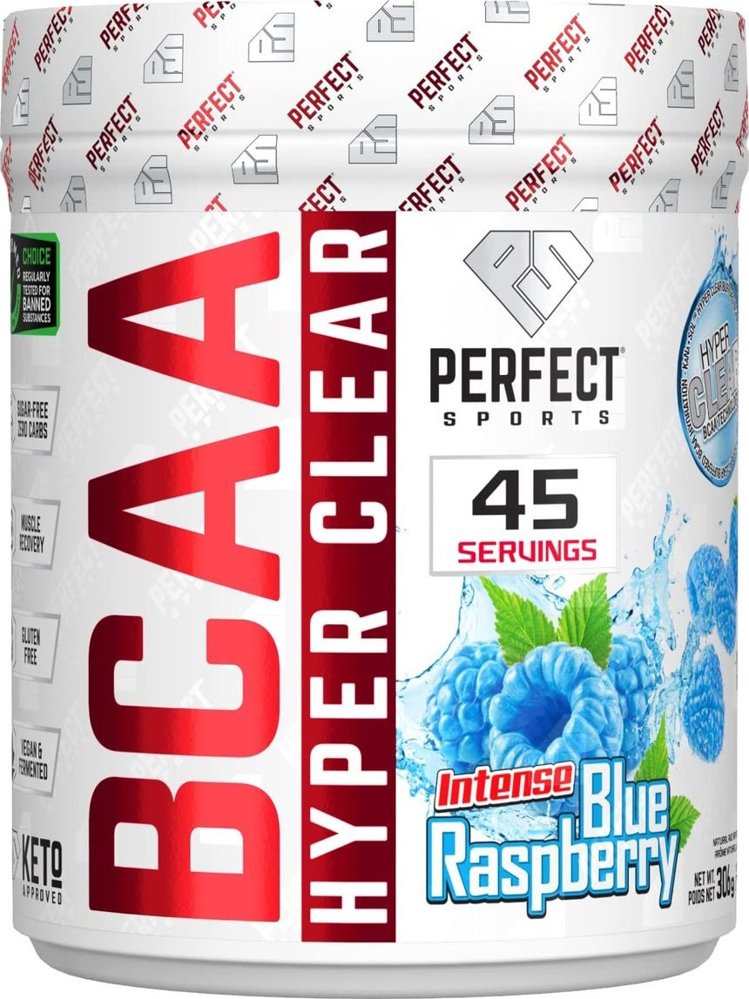

Nutrition is crucial in bodybuilding, as it impacts muscle growth, recovery, and performance. All foods are composed of three parts: protein, carbohydrates, and fats. Protein are made out of amino acids, and the three amino acids leucine, isoleucine, and valine (a.k.a. BCAAs) are the amino acids that directly affect muscle growth and recovery.
These amino acids are especially important in building muscle and can be taken through food sources such as chicken, beef,
eggs, or from supplements like protein powder. It is recommended to consume about 0.6-1g of protein per pound of bodyweight daily
to help with building muscle and muscle recovery.
Furthermore, carbohydrates replenish glycogen stores and gives you the energy
for workouts, and helps with recovery. Carbohydrates are very important for performance, as your body needs to use glucose
for energy and can also result in longer and higher performance in the gym. Without carbohydrates, you wouldn't have a sufficient amount
of energy to have productive workouts.
Finally, natural fats are important for our overall health. Fats are crucial for producing testosterone, supports joint health, and improves our brain health and cognitive function. Healthy fats from eggs, avocados, fish, and more are important for your overall health. Although, you need to stay away from unhealthy fats. Trans fats are very unhealthy, as they are artificial and can reduce testosterone, increase bad cholesterol (LDL), and more. Trans fats are mostly found in fast food and processed foods, so it is best to stay away from these foods.
Taking supplements has many benefits, such as faster muscle growth and recovery, increasing strength and performance, better
endurance and energy, and overall health and well-being. Although, supplements should complement a healthy and balanced diet,
not replace it.
To learn more in-depth of supplements and the benefits, check out these videos:
Creatine is one of the most researched supplements in the world. Creatine has many benefits such as increase in ATP production, improves protein synthesis, reduces muscle fatigue and soreness, and more. The most common type of Creatine is Creatine monohydrate. To take Creatine, you calculate the amount you take everyday by following this formula: 0.1g of Creatine multiplied by your bodyweight in kg. You can also take Creatine at any time of the day.
Protein powder is a concentrated source of protein to help build muscle, improve muscle recovery, and meet your daily amount of protein. There are 3 main types of protein powder: whey protein, casein protein, and vegan. Whey protein is the most common type of protein powder, as it is high in BCAAs and absorbed quickly. Casein protein is a slow-digesting type of protein and vegan protein powder is created with protein sources like pea, brown rice, soy, etc. To take protein powder, you can mix it with any liquid and you can take it anytime of the day.
Pre-workout is a supplement designed to boost energy, focus, and performance during your workout. It contains a mix of stimulants, amino acids, and other ingredients that improves strength and reduces fatigue. Some ingredients include: caffeine, beta-alanine, l-citrulline, and more. To take pre-workout, it is best to take it 20-30 minutes before your workout to ensure the caffeine and other ingredients have digested.
Branched-chain amino acids (BCAAs) are three amino acids (Leucine, Isoleucine, Valine) that are essential for muscle hypertrophy and recovery. These amino acids boosts muscle growth, reduces muscle soreness, and more. To take BCAAs, you can take it at any time of the day and mix it with any type of liquid.
